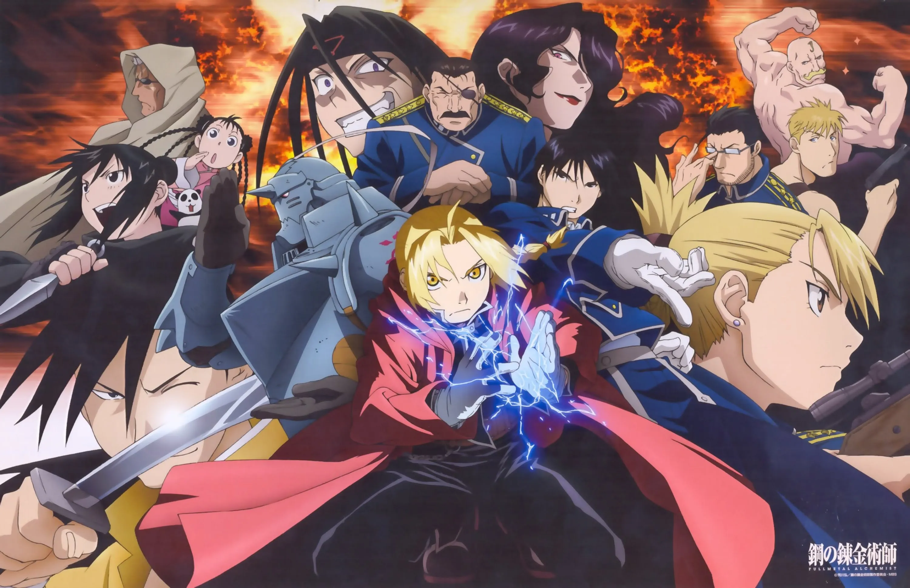
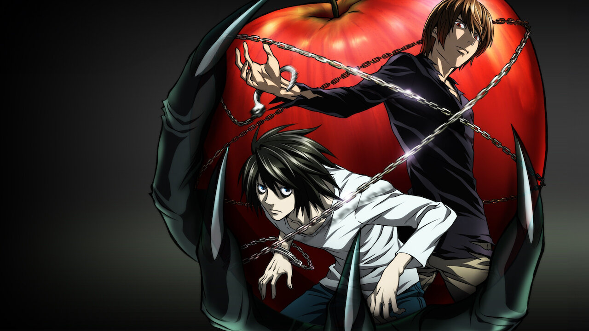
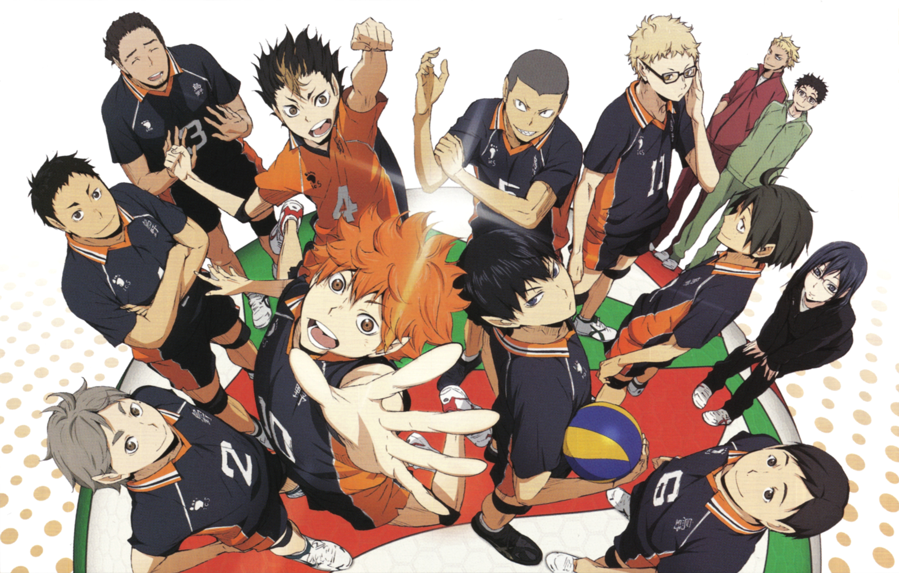
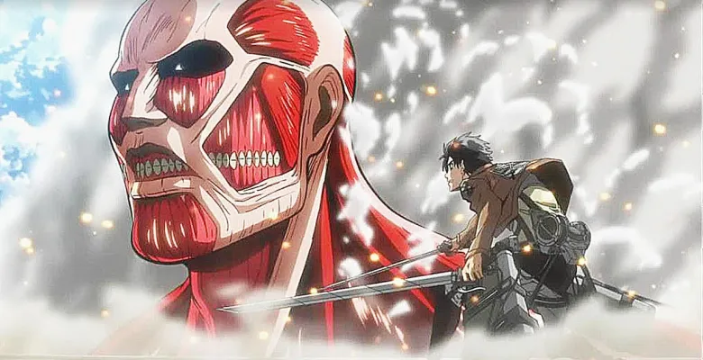
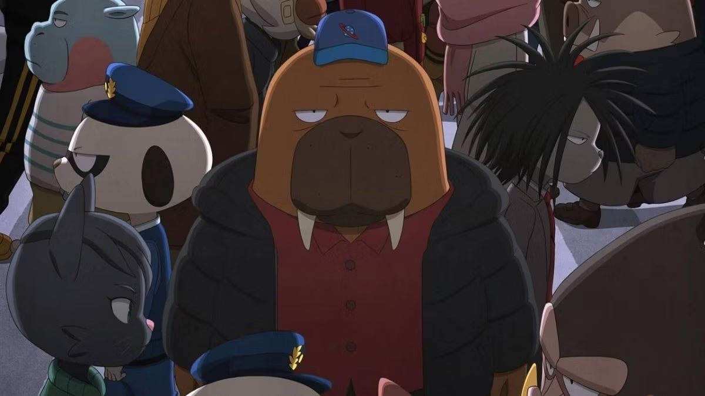
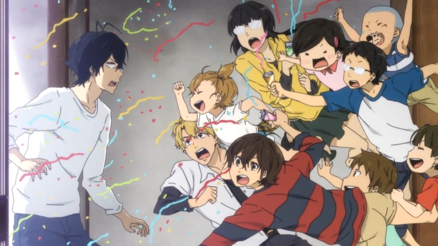
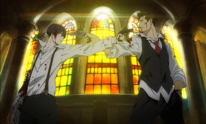

Recommendations
These recommendations are grouped to make discovery feel easier.
Instead of one giant list, this page organizes titles by
accessibility, cultural popularity, and overlooked quality.
Beginner-Friendly Picks

Fullmetal Alchemist: Brotherhood
Genre: Action / Fantasy
Tone: Emotional, adventurous, dramatic
Level: Beginner
A strong entry point because it balances action, emotion,
worldbuilding, and memorable characters without being too
overwhelming.

Death Note
Genre: Mystery / Thriller
Tone: Dark, tense, analytical
Level: Beginner
Ideal for users who want something intense and thought-driven
without needing deep genre background.

Haikyuu!!
Genre: Sports
Tone: Energetic, uplifting, competitive
Level: Beginner
Great for new viewers because it is easy to follow, highly
motivating, and emotionally accessible.
Popular Gateway Series

Attack on Titan
Genre: Action / Mystery
Tone: Intense, dark, suspenseful
Level: Intermediate Beginner
A popular gateway because it hooks viewers quickly and keeps tension
high while expanding its world over time.

Demon Slayer
Genre: Action / Fantasy
Tone: Emotional, stylish, high-energy
Level: Beginner
Known for its accessible structure, strong visuals, and emotional
core, making it easy for new viewers to enjoy.

Jujutsu Kaisen
Genre: Action / Supernatural
Tone: Fast, modern, intense
Level: Beginner to Intermediate
A good recommendation for users who want something stylish, current,
and action-heavy without a slow start.
Hidden Gems

Odd Taxi
Genre: Mystery / Drama
Tone: Quiet, layered, clever
Level: Intermediate
Excellent for viewers who enjoy subtle writing, unusual structure,
and rewarding mystery-driven storytelling.

Barakamon
Genre: Slice of Life / Comedy
Tone: Relaxed, warm, reflective
Level: Beginner
A calmer recommendation for users who want heart, personality, and
character development without heavy conflict.

91 Days
Genre: Crime / Drama
Tone: Serious, focused, dramatic
Level: Intermediate
A strong choice for users who prefer grounded revenge stories and
tighter dramatic pacing.